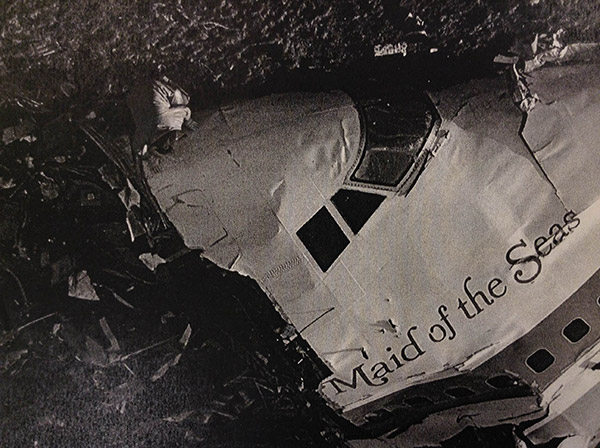
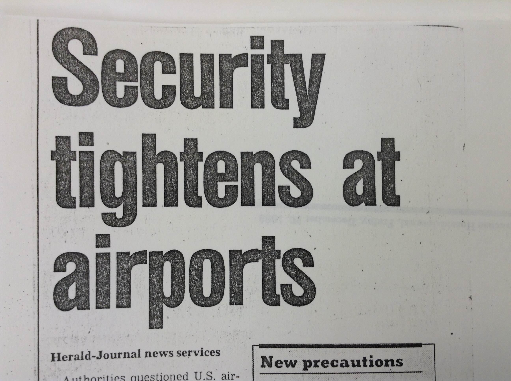
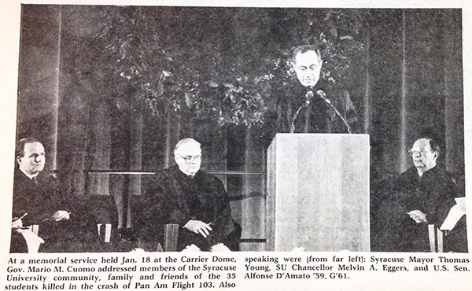
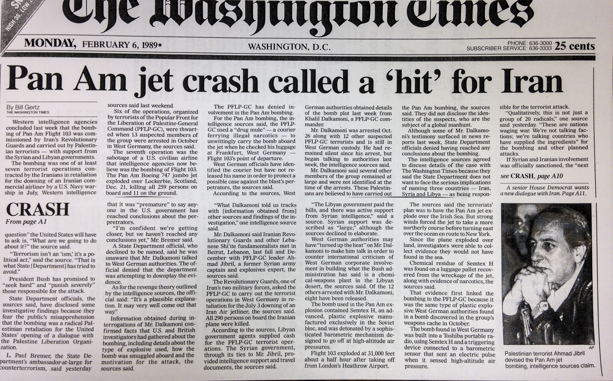
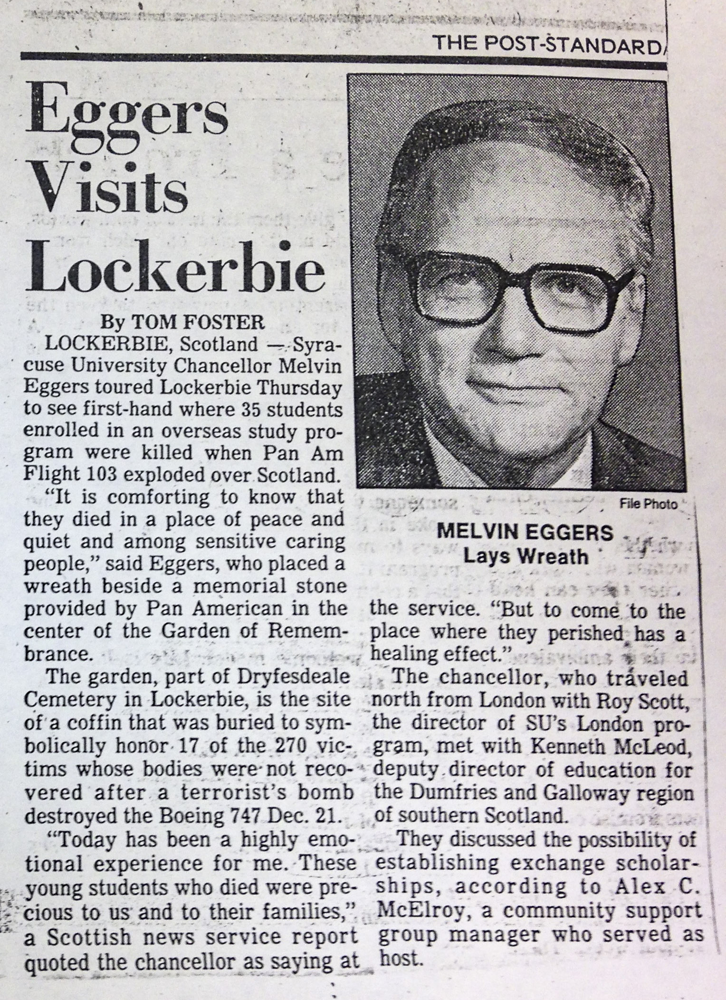
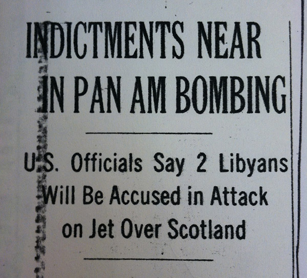
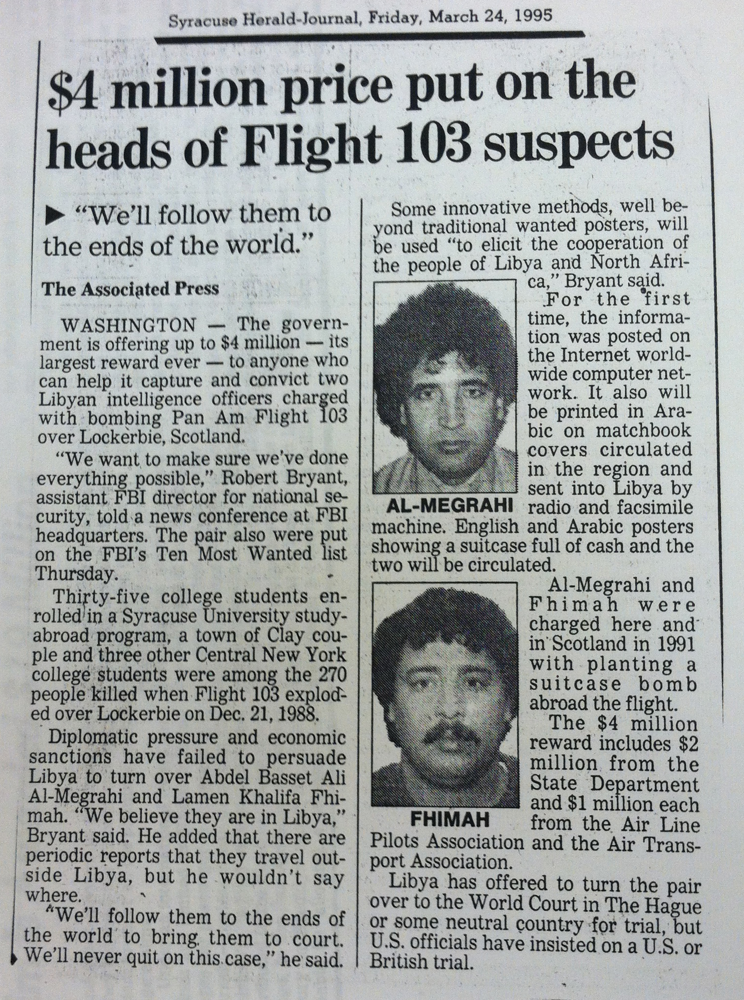
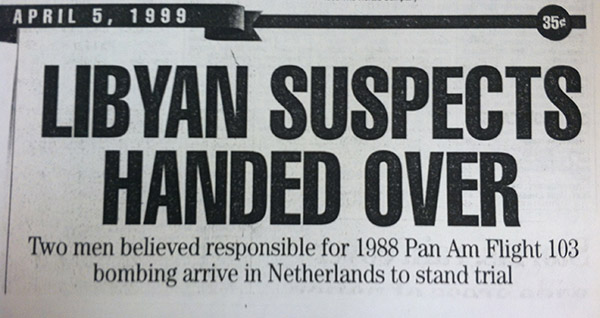
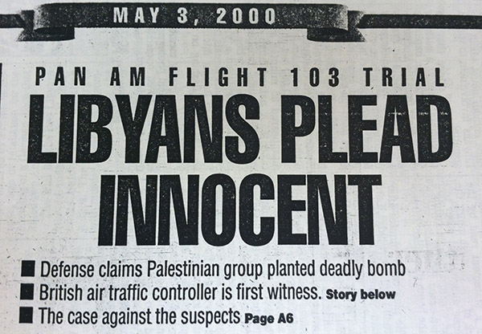

-
Introduction
The bombing of Pan Am Flight 103 represents one of the first major acts of terrorism that the U.S. experienced. Among the 270 victims were 35 Syracuse University students. This timeline recounts the subsequent events and honors those lives 25 years later.
-
Dec. 21, 1988
Pan American Flight 103, a Boeing 747, took off from London, bound for New York City. It exploded over the town of Lockerbie; all 259 people on board were killed, as well as 11 on the ground in Lockerbie.
-
Dec. 28, 1988

British investigators concluded that a bomb in the luggage compartment caused the explosion.
-
Dec. 29, 1988

As a result of the Pan Am 103 terrorist attack, the Federal Aviation Administration imposed new regulations on American planes that flew out of Pan Am airports in Western Europe and the Middle East.
-
Dec. 29, 1988
The Air Accidents Investigation Branch of the British Department for Transport determined that residue on the wreckage was consistent with "high-performance plastic explosive."
-
Jan. 1, 1989
Accompanied by British Prime Minister Margaret Thatcher, 700 mourners attended a memorial at Dryfesdale Parish Church in Lockerbie. About 200 relatives of the victims and 100 Pan American World Airways employees were in attendance.
-
Jan. 18, 1989

At an interfaith memorial held at the Carrier Dome, Syracuse University Chancellor Melvin A. Eggers announced a Remembrance Scholarship fund. Approximately 15,000 people were in attendance. The Daily Orange -- the student-run newspaper at SU -- released a special edition dedicated to the 35 student victims, and the SU Department of Drama performed a special tribute.
-
Jan. 21, 1989
The Syracuse University ROTC program held its own memorial for Timothy Michael Cardwell, an Army ROTC scholarship winner, a volunteer in the ROTC Ranger program and a sergeant in the 403rd Army Reserve National Guard at Syracuse. Almost 60 ROTC members, along with the Hendricks Chapel Choir, attended the service.
-
Jan. 31, 1989
A single casket was buried in the Dryfesdale Cemetery to represent the 17 victims whose bodies were never found during the searches following the crash.
-
Feb. 3, 1989

Reports said western intelligence came to the conclusion that the bombing was commissioned by Iran and carried out with support from Syria and Libya.
-
March 16, 1989

SU Chancellor Melvin A. Eggers visited Lockerbie. While there, he placed a wreath at the Grave of the Missing Persons.
-
April 3, 1989
Relatives and friends of the victims held a demonstration and memorial vigil in Washington, D.C.
-
Feb. 13, 1991
Three years after the bombing, the Scottish Fatal Accident Inquiry was completed and determined the attack to be a "criminal act of murder."
-
Nov. 14, 1991

The United States indicted two Libyan intelligence agents -- Abdelbaset Ali Mohmed al-Megrahi and Al-Amin Khalifa Fhimah -- and left open the possibility of military retaliation for the Pan Am 103 bombing.
-
March, 23, 1995

The FBI announced a $4 million award for the two suspects.
-
April, 5, 1999

More than 10 years after the Pan Am 103 bombing, Fhimah and al-Megrahi -- the two Libyans charged with planting the bomb -- arrived in the Netherlands to face trial for the crime.
-
May 3, 2000

 A single casket was buried in the Dryfesdale Cemetery to represent the 17 victims whose bodies were never found during the searches following the crash.
A single casket was buried in the Dryfesdale Cemetery to represent the 17 victims whose bodies were never found during the searches following the crash.